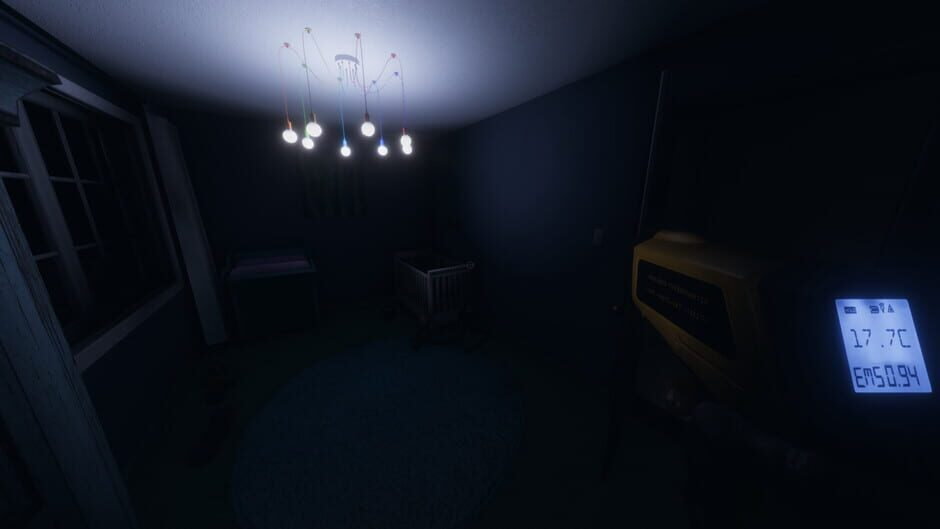
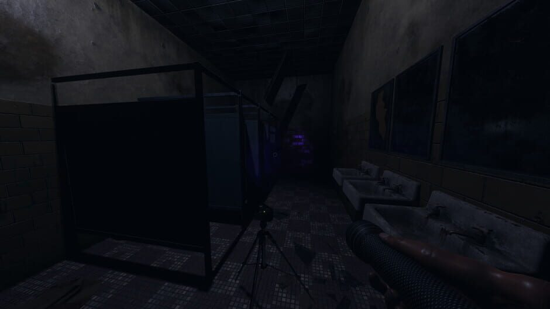

Hunt for clues

Use various equipment in order to find clues and narrow down what ghost you're facing. First of all you have
to find the room the ghost haunts. This can be done using either different equipment or the ghost interacting
with nearby objects. Once you've found the room, it's time to gather clues. Look for fingerprints,
low temperatures or even try to communicate with the ghost.
Complete objectives
You start the game with 4 objectives. The first objective is always to figure out what ghost you're dealing
with. This is done by gathering 3 clues. After that, you will have 3 randomly generated objectives. These
can be anything from finding dirty water in a sink, witnessing paranormal activity or even taking a photo
of the ghost.

Get out alive

While you're inside the building, your sanity will be dropping. You and your teams sanity always start at
100%. The ghost is affected by your teams sanity, and will grow stronger the lower your sanity drops. This
means that managing your sanity is one if not your highest priority during the game. Some ghosts will also
have different effects on your sanity, making it into a possible tool for narrowing down what ghost you're
facing if you have a hard time finding clues. When the ghost gets stronger, it's more likely to start a hunt.
A hunt is when the ghost is hunting you and your team, and if they catch one of you, they're dead. During a
hunt, lights will start to flicker indicating that you and your team should run, hide or die.
Purchase stronger equipment
After leaving the map, you will be rewarded money and experience based on the ammount of objectives
completed, photos taken and finding the ghosts belongings. Leveling up will unlock new equipment, and
the money is used to purchase it. You can get things such as a stronger flashlight, sound and motion sensors
and more. To learn more about the equipment you can purchase, click here.